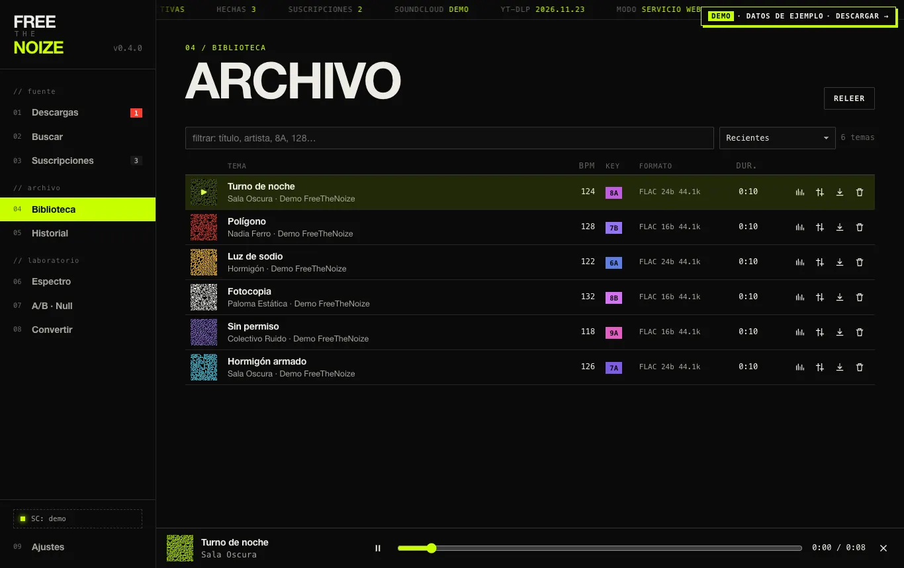
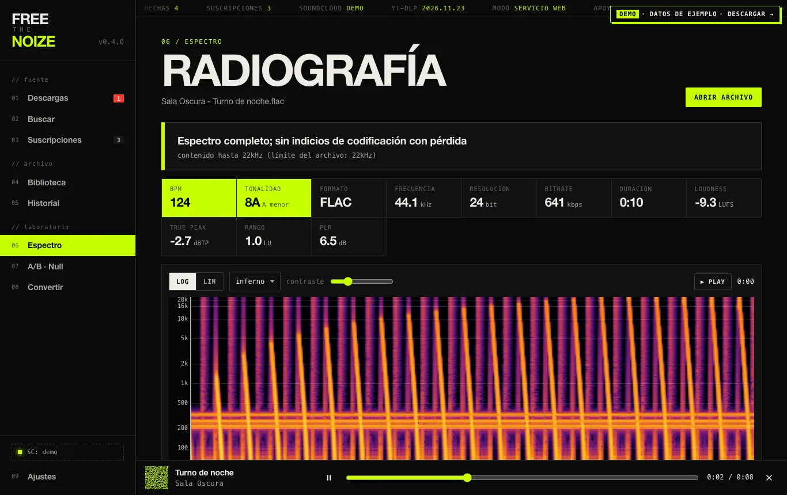
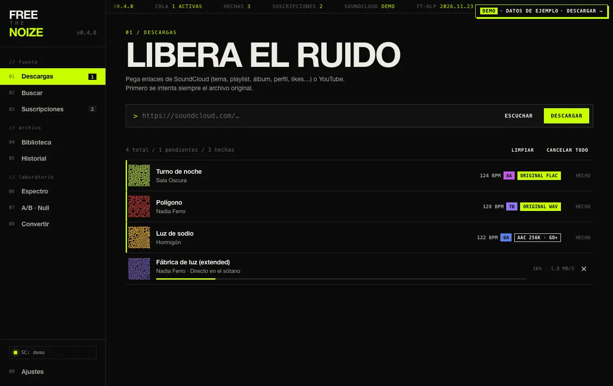

Siempre la mejor fuente
Primero el original que subió el artista (WAV, FLAC, AIFF) si permite descargas; si no, AAC 256 con Go+, y si no, lo que haya. Sin recodificar nunca, y con una etiqueta que dice la calidad real que has conseguido.
Descarga tu música de SoundCloud a la máxima calidad disponible, comprueba qué calidad tiene de verdad y organízala para pinchar: BPM, tonalidad en Camelot, carátula y etiquetas que leen Rekordbox, Traktor y Serato.
Sin cuentas, sin anuncios, sin telemetría. Licencia GPL-2.0.

Primero el original que subió el artista (WAV, FLAC, AIFF) si permite descargas; si no, AAC 256 con Go+, y si no, lo que haya. Sin recodificar nunca, y con una etiqueta que dice la calidad real que has conseguido.
BPM y tonalidad (Camelot) de cada descarga, escritos en las etiquetas. Título limpio, artista separado, carátula incrustada en todos los formatos.
Espectrograma, corte de frecuencias para cazar falsos lossless, LUFS, true peak, LRA y PLR. Compara dos versiones A/B con el volumen igualado y haz un null test.
Sigue tus likes, playlists o perfiles: se revisan solos y bajan solo lo nuevo, sin volver a pedir lo que ya tienes.
Tu carpeta de música filtrable por título, artista, BPM o Camelot, con reproductor. Convierte en lote a WAV, AIFF, FLAC, MP3 o AAC conservando etiquetas y carátula.
App para macOS, Windows y Linux, o servicio web en Docker para tenerlo en tu servidor o NAS y usarlo desde el móvil. La misma interfaz en los dos.


Todas las descargas y las notas de la versión · SHA256SUMS.txt
FreeTheNoize funciona como servicio web: lo dejas corriendo en tu servidor, NAS o mini PC y lo usas desde el navegador del portátil o del móvil, con la misma interfaz que la app. Es la vía verificada de punta a punta: la imagen va firmada y no hay nada que abrir «igualmente».
Guarda esto como compose.yaml:
services:
freethenoize:
image: ghcr.io/freethenoize/freethenoize:latest
ports: ["127.0.0.1:8765:8765"] # solo esta máquina; fuera, por el túnel
environment:
FTN_PASSWORD: ${FTN_PASSWORD:?define FTN_PASSWORD}
volumes:
- ./data:/data # ajustes, historial, suscripciones
- ./music:/music # tu música
restart: unless-stoppedFTN_PASSWORD='una-frase-larga' docker compose up -d
# → http://localhost:8765Para actualizar: docker compose pull && docker compose up -d.
Solo tus dispositivos lo ven. En la máquina del servidor:
tailscale serve --bg 8765Te da una dirección https://…ts.net dentro de tu red de Tailscale.
Con tu dominio. Crea un túnel con cloudflared que apunte a http://localhost:8765 y,
si quieres, ponle Cloudflare Access delante.
Pon siempre FTN_PASSWORD si el servicio es accesible desde fuera de tu máquina.
Todas las variables (FTN_MUSIC_DIR, FTN_SOUNDCLOUD_TOKEN, FTN_TRUSTED_PROXIES…)
en el README.
Cada release trae sus sumas SHA-256 y una atestación de procedencia: la prueba, firmada por GitHub, de que el archivo lo construyó el CI de este repositorio a partir de su código.
# Suma SHA-256 (macOS: shasum -a 256 -c …)
sha256sum -c SHA256SUMS.txt --ignore-missing
# Procedencia (CLI de GitHub)
gh attestation verify FreeTheNoize-Windows-x64-Setup.exe -R FreeTheNoize/FreeTheNoizeLa imagen de Docker va además firmada con Sigstore, sin claves, con la identidad del workflow que la construye:
cosign verify ghcr.io/freethenoize/freethenoize:latest \
--certificate-identity-regexp '^https://github.com/FreeTheNoize/FreeTheNoize/\.github/workflows/docker\.yml@' \
--certificate-oidc-issuer https://token.actions.githubusercontent.com
gh attestation verify oci://ghcr.io/freethenoize/freethenoize:latest -R FreeTheNoize/FreeTheNoizeFreeTheNoize es un kernel pequeño con complementos: descargas, biblioteca, espectro, conversor… cada función es una carpeta independiente. Para añadir una no hace falta entender el resto.
git clone https://github.com/FreeTheNoize/FreeTheNoize && cd FreeTheNoize
uv venv && uv pip install -e ".[desktop,dev]"
python tools/new_plugin.py mi_funcion --title "Mi función" # complemento listo para usar
python tools/check_architecture.py && .venv/bin/python -m pytest